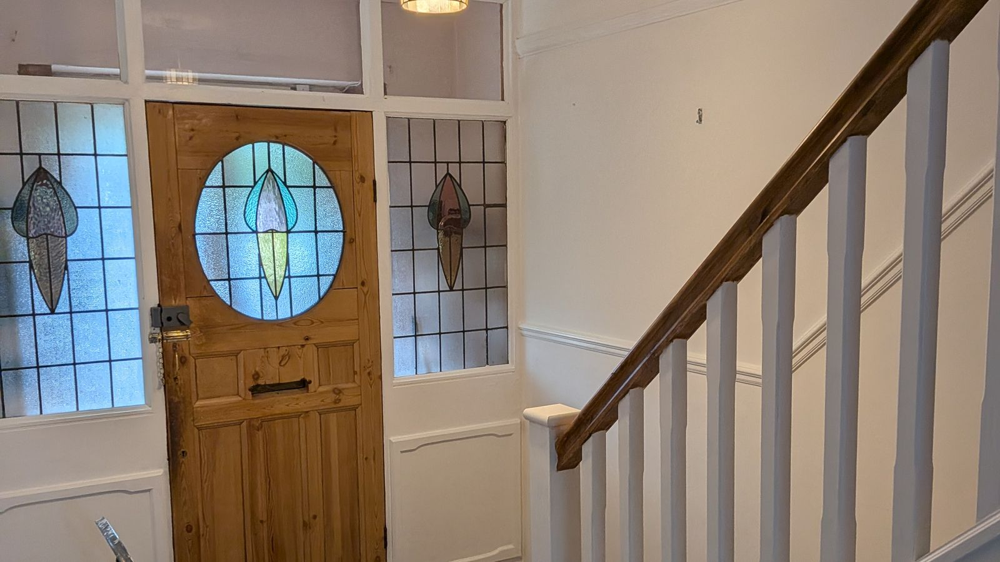
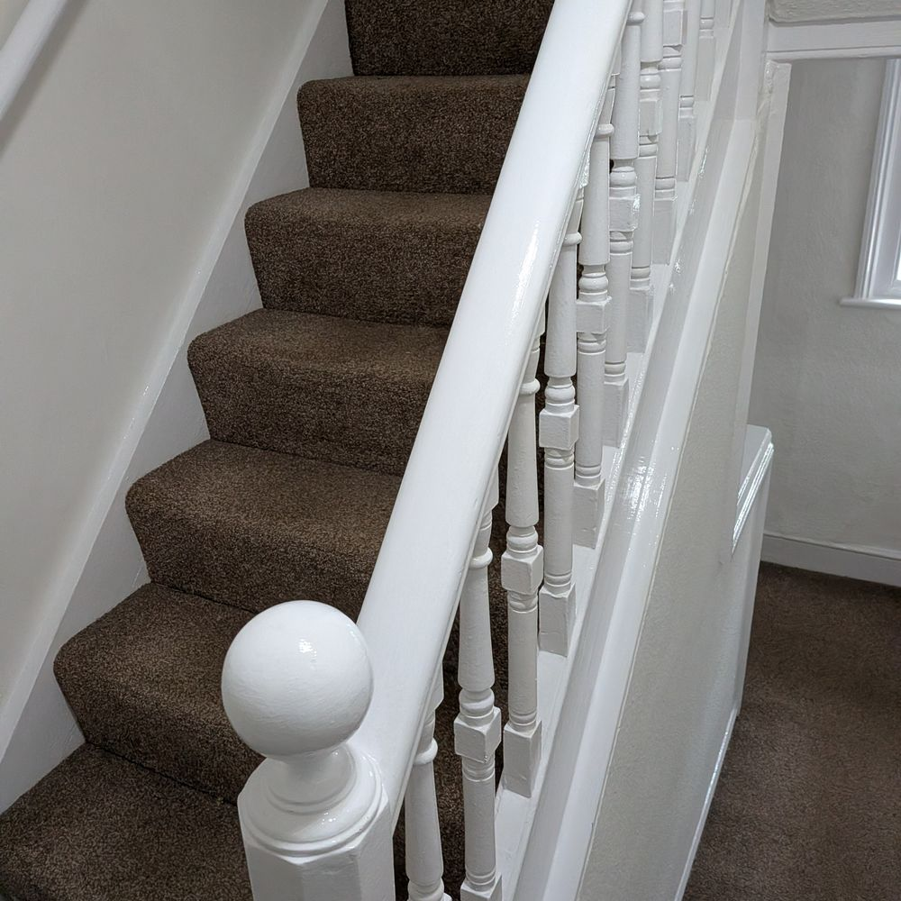

Interior painting
Living rooms, bedrooms, bathrooms, kitchens, ceilings, and hall, stairs and landing.

Steven Letchford Painting & Decorating Services
Interior and exterior decorating done to a very high standard, with every job left clean and tidy. Over 15 years' experience across Royal Tunbridge Wells, Pembury, Speldhurst, Tonbridge, Crowborough and Sevenoaks.
What I do
All aspects of internal and external decorating, from a single room or front door to a whole house.
Living rooms, bedrooms, bathrooms, kitchens, ceilings, and hall, stairs and landing.
House exteriors, external walls, windows and doors, soffits and fascias.
Hanging new wallpaper, plus removing and stripping old paper ready for a fresh finish.
Interior doors, front doors, skirting boards, stair rails, banisters and kitchen cabinet doors.
Painting or staining fences, and staining, varnishing or oiling decking.
Paint effects and murals, plus garages, offices and warehouses.

Why choose Steven
Areas we cover
Based in Royal Tunbridge Wells, Kent, Steven works within roughly a 20-mile radius, decorating homes and businesses in Tunbridge Wells town centre, Rusthall, Southborough, Pembury, Speldhurst, Tonbridge, Crowborough, Sevenoaks and the villages in between.
Not sure if you're covered? Just get in touch.
What customers say
Recommended 23 times by neighbours on Nextdoor. Here's what customers have said.
Good communication prior to visit. Stair rail painted along with additional painting of banister not previously requested of which we were very appreciative of. Very pleased with result, job completed quicker than expected. Tidy following completion. Would recommend and use again, many thanks.
Friendly and helpful couple. Completed work early. Left everything tidy.
Steve has done a wonderful job, house looks amazing. He arrived on time, kept the work very tidy, was polite and helpful and will be asking him back again.
Steven and his wife did a great job painting our house. They were also very friendly. Would absolutely recommend.
Steven, ably assisted by Lisa and Phil, have recently painted our kitchen. We were very pleased with their work. They did a good job and were punctual and efficient and they left everything clean and tidy. We would definitely use them again.
Steven and his wife recently stripped wallpaper and repainted our living room. They did an excellent professional job and arrived when they said they would. I would recommend them for any decorating job.
We have recently had some work completed by Steven, everything was professional from the quote, to agreeing a start date and the work carried out. Steven arrived on time and got on with the work, everything was completed as agreed. Really happy with the work, Steven and Lisa worked hard to get everything done and I would be happy to recommend them to others.
Steve and his team have just painted my staircase. Steve was polite, tidy and the work done was to a high standard. Steve is competitively priced and I would highly recommend him to everyone on Nextdoor looking for a reliable trustworthy painter and decorator.
Steve & Lisa are a great team & have done a brilliant job painting the front of our house & wall. Very friendly and hardworking. Will definitely be using them again.
Just had my whole house redecorated by Steven and team - he was very tidy, polite and incredibly quick! Reasonable price and great job would definitely recommend.
We’ve just had our hall, stairs, landing, bathroom and WC painted by Steve, did an absolute amazing job.
He’s reliable, turns up when he says he will, he’s neat, tidy and polite whilst doing an incredible job, very professional.
Will definitely be booking him again.
10 out of 10 ⭐
Thankyou
Thank you to Steven and team for the painting work they completed for us. A hard working team who complete their work to a high standard. Would recommend.
Steve and his team were great from start to finish, competitively priced and professional throughout the whole process. He has done a fantastic job freshening up the outside of our house. Thanks again Steve!
Steve has made a fantastic job with his friend Phil , decorating my hall and bathroom , and changed door handles , and just painted the front of my bungalow . Looks great .
Steve painted our facias that were looking tired and weathered. He did an excellent job and they are looking like new again. He also was extremely careful, clean and tidy. The work was also very good value for money considering the high quality of the finish. I highly recommend him.
Steven has basically decorated most of my house on and off over the last year. He’s always very accommodating and does a good clean job. I’m very happy with his work and I will continue to use him.
Steven has recently painted my living room and all the paintwork in my hallway. Very pleased with his work. Left my house clean and tidy.
Steven has just repainted two of my top sash windows and I wouldn’t hesitate in recommending his painting and decorating service. He was punctual, polite, and efficient, quoting and completing the job very satisfactorily within two days of my initial enquiry.
Steven recently did some interior painting in my house and he did a great job! He is diligent, tidy and charges reasonable rates.
I’ve seen Stevens work frequently posted on nextdoor and have now used him on a few projects locally. He does a great job. Very neat, tidy and a genuinely good bloke. Prices are very reasonable and always happy to accommodate if the job changes in anyway.
Highly recommended and well worth a call for any decorating needs. Cheers Steven 👌🏻
Steven and his wife did an excellent job on painting and wallpapering our nursery! They were polite, punctual, tidy and did work to a high standard. Would recommend!
Steve and his team painted the exterior doors and window of our house. He and his team delivered us an excellent service which was professionally delivered. He was prompt, fair and knowledgeable. Kept us well informed at all times and completed the job quickly, keeping to time as promised. We would certainly use Steve again.
Recent work
A few of Steven's recent hallway and staircase jobs. Open the full gallery to see all 23 photos, including before and after shots and work in progress.
The same hallway, staircase and under-stairs cupboard, from bare pine to a finished white and oak look.
More from this job
Carpeted staircase and landing, entrance hall, hallway door, bedroom feature wall and exterior bay window.
Bedroom walls stripped and prepared, and a stairwell set up for decorating.
Get in touch
Tell Steven what you'd like done and where, and he'll arrange a free, no-obligation estimate. Prefer to talk? Just give him a call.